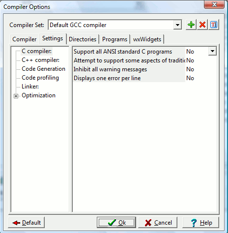

The compiler settings will, of course, depend on which compiler you are
using (in most cases Mingw gcc or MS VC). I'm only going to explain the
MingW gcc settings in this help file. However, Microsoft
provides
a very informative online
library if you need help with MS VC compiler settings.

NOTE: A more in depth explanation of these compiler options can be
found in the gcc
manual.
C Compiler
Support all ANSI standard C programs
Option -ansi:
Will attempt to be as ANSI conformant as possible.
Attempt to support some aspects of traditional C
pre-processors
Option -traditional-cpp
: Will attempt to make the pre-processor behave as traditional ones do.
Inhibit all warning messages
Option -w:
No warnings will be displayed.
Displays one error per line
Option -fmessage-length=0
: Displays one error per line!
C++ compiler
Turn off all access checking
Option -fno-access-control
Accept $ in identifiers
Option -fdollar-in-identifiers: Will allow $ to be used in
variable and
function names. Cannot be used with GCC 3.2.
Code generation
Enable exception handling
Option -fexceptions
Use same size for double and float
Option -fshort-double
Put extra commentary information in the generated assembler
Option
-fverbose-asm: The intermediary assembler files generated
will have
extra comments. Only useful if they're being saved (using the -S
command-line option).
Code profiling
Generate profiling info for analysis
Option
-pg: Writes extra information into the generated program
files to use
with the profiler. The profiler lets you see where maximum amount of
the program's execution time is being spent, so that when you're
optimizing the program, you optimize only the parts that make the
difference. This option should be disabled when building retail/final
versions. It should be used only in debug builds.
Option -g3: Writes debug information into the generate
binaries. This
lets you debug it with the integrated
debugger.
Do not use standard system startup files or libraries
Option -nostdlib: Do not use the standard system
startup files or libraries when linking. No startup files and only the
libraries you specify will be passed to the linker. The compiler may
generate calls to memcmp, memset, memcpy and memmove. These entries are
usually resolved by entries in libc. These entry points should be
supplied through some other mechanism when this option is specified.
Do not create a console window
Option -mwindows: Instructs gcc to build a Windows GUI
application without a console window.
Strip executable
Option -s:
Remove all symbol table and relocation information from the executable.
Optimization can make your code execute
faster, but requires more time to compile.
Perform a number of minor optimizations
Option -fexpensive-optimizations: Perform a number of
minor optimizations that are relatively expensive. Enabled at levels
-O2, -O3, -Os.
Further Optimizations
Here, you can select the optimization level.
Optimize
Option -O1: With -O1 (or
just -O), the compiler tries to reduce code size and execution time,
without performing any optimizations that take a great deal of
compilation time.
Optimize more
Option -O2: GCC
performs nearly all supported optimizations that do not involve a
space-speed tradeoff. The compiler does not perform loop unrolling or
function inlining when you specify -O2. As compared to -O, this option
increases both compilation time and the performance of the generated
code.
Best optimization
Option -O3: Optimize yet
more. -O3 turns on all optimizations specified by -O2 and also turns on
the -finline-functions, -funswitch-loops, -fpredictive-commoning,
-fgcse-after-reload and -ftree-vectorize options.